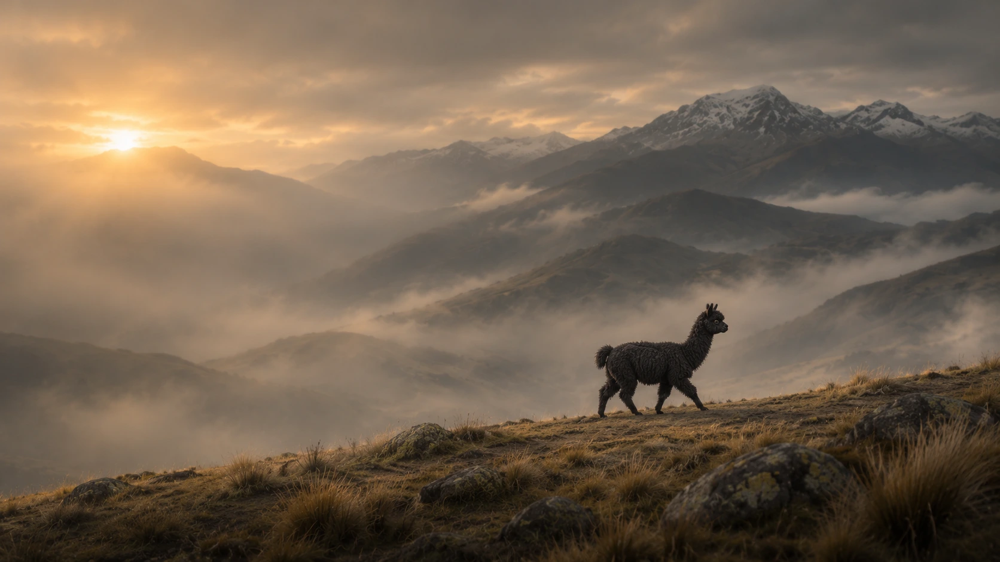

Entre la luz
y la niebla.
El amanecer dibuja el contorno de la alpaca mientras la niebla recorre la cordillera.

El amanecer dibuja el contorno de la alpaca mientras la niebla recorre la cordillera.